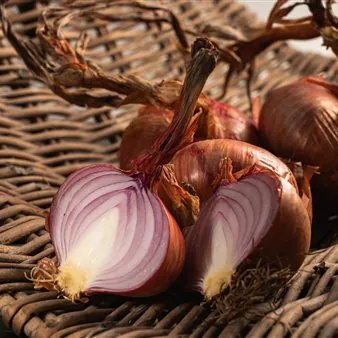

dom 4 ott
Treno storico Sapori d’Autunno 2026
Locomotiva elettrica con carrozze anni '30 "Centoporte" e bagagliaio. A bordo del treno storico da Treviso i viaggiatori arriveranno a Cavasso Nuovo in occasione della tradizionale " FESTA D’AUTUNNO 2026 – 12^ Edizione Festa della Cipolla Rossa e della Zucca" iniziativa che vede…
 Indicazioni
Indicazioni
- Costi e prenotazioni
- Costo non indicato · Prenotazione non indicata
- Programma
- Programma da verificare. Apri la fonte ufficiale per orari e possibili aggiornamenti.
- In caso di maltempo
- Nessuna indicazione specifica pubblicata.
- Note
- Acquisito automaticamente dalla fonte.
L’EVENTO
Descrizione completa
Locomotiva elettrica con carrozze anni '30 "Centoporte" e bagagliaio.
A bordo del treno storico da Treviso i viaggiatori arriveranno a Cavasso Nuovo in occasione della tradizionale " FESTA D’AUTUNNO 2026 – 12^ Edizione Festa della Cipolla Rossa e della Zucca" iniziativa che vede come protagonista il presidio slow food "Cipolla Rossa di Cavasso Nuovo e della Val Cosa" e la zucca proponendo gli stand dei produttori e diversi piatti per valorizzare questo prodotto. Durante il viaggio in treno e in Stazione ferroviaria informazioni e approfondimenti di storia, tecnica e cultura ferroviaria a cura dell’Associazione Museo Stazione Trieste Campo Marzio.
A bordo del treno storico da Treviso i viaggiatori arriveranno a Cavasso Nuovo in occasione della tradizionale iniziativa che vede come protagonista il presidio slow food "Cipolla Rossa di Cavasso Nuovo e della Val Cosa" e la zucca proponendo gli stand dei produttori e diversi piatti per valorizzare questo prodotto. L’ evento, oltre a celebrare le specialità locali propone una piacevole serie di attività che includono gastronomia, musica, arte e cultura. Durante la festa, ci saranno mostre, concerti, attività di intrattenimento per tutti i gusti e lungo le vie del paese stand con prodotti di artigianato e dell’agroalimentare. Nello specifico:
mercatino artigianale e chioschi con prodotti enogastronomici lungo le vie del paese
L’artista Giuseppe Gambon ci illustrerà la sua mostra di oggetti in legno, dando la possibilità a chi lo desidera di cimentarsi in un piccolo laboratorio.Presso il cortile interno “PALAZAT”.
IL PROGRAMMA
Programma e orari
Appuntamenti raccolti dalle fonti elencate. Dove manca un orario, non è ancora disponibile in questa scheda.
Programma pubblicato
- ORE 10.00 APERTURA:
- ORE 10.30 LABORATORIO DI INTRECCIO.
- ORE 11.00 GIOCHI CURIOSI!
- ORE 12.00 APERTURA CUCINE
- ORE 14.00 “MANDI TENDONE”Spettacolo musicale con due band giovanili.
- ORE 14.30 TORNEO DI SCACCHI “SAN REMIGIO” a cura del circolo scacchi di Maniago.Presso sala convegni “PALAZAT”. Inizio iscrizioni ore 13.30
- 17:00- 17:27 approfondimenti di storia, tecnica e cultura ferroviaria a cura dell’Associazione Museo Stazione Trieste Campo Marzio c/o Stazione Ferroviaria di Fanna
- 11:21 Transfer in navette TPL FVG da Stazione FS di Fanna a Cavasso Nuovo
- 16:30 Transfer in navette TPL FVG da Cavasso Nuovo a Stazione FS di Fanna
INFORMAZIONI UTILI
Prima di partire
- Controllare la fonte prima di partire.
ORGANIZZAZIONE